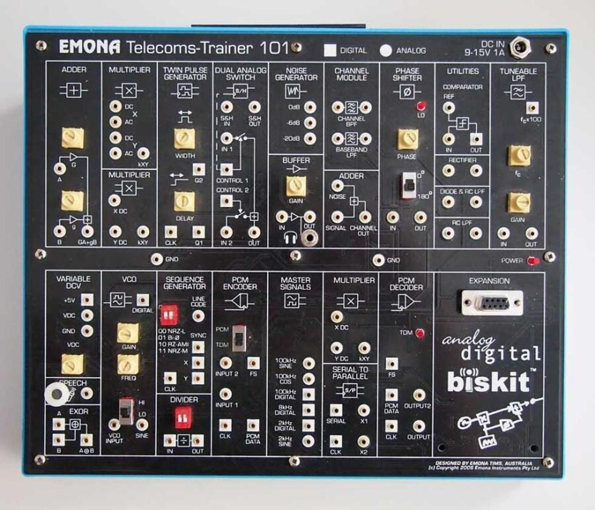

LAB COMPRE PRACTICE
EMONA Telecoms-Trainer 101
Patch the real trainer photo with virtual lab leads. Fixed switches · v3
Free practice
Lead colour
TASK
Connect any two sockets. Any jack can connect to any other jack.
Drag from a socket to another socket, or click one and then the other.

What this simulator does
This is a connection-practice simulator, not an electrical/signal simulator. It deliberately allows any socket-to-socket patch — including output-to-output — so you can rehearse the physical wiring exactly as instructed in a lab question.
Click the photographed VCO, PHASE SHIFTER or PCM ENCODER switch to flip it. The switch positions are interactive practice settings, not an electrical simulation.
Use Show sockets to verify every mapped round and square jack. The socket map is stored in socket-map.js, so it is easy to fine-tune later if you replace the trainer photograph.